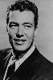
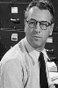

Country:United States, 74 minutes
Spoken languages:
Genres:Adventure, Sci-Fi
Director(s):Terry O. Morse
Writer(s):Millard Kaufman
Video Codec:Unknown
Number: 1513


Certification:
Storyline:
With the cyclotram, an atomic-powered rock-boring vehicle, Dr. Jerimiah Morley leads an expedition into a subterranean world.
Cast:  

Medium: Original DVD,
Comments: Part of: Sci-Fi Classics - 50 Movies
Loaned: No
Aspect ratio: Unknown